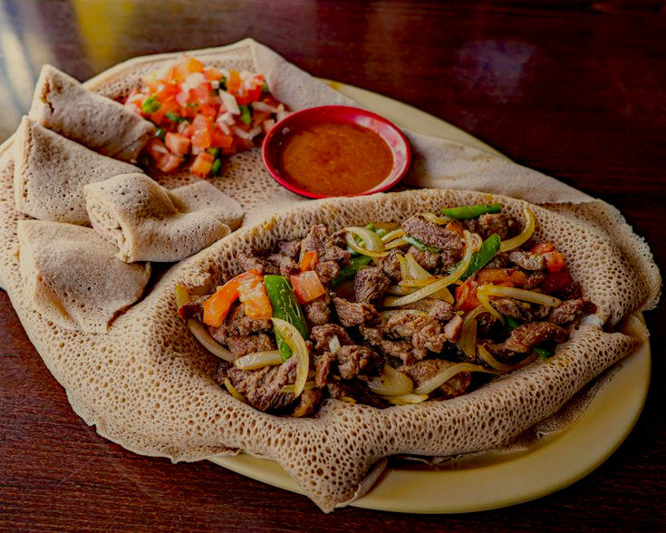

Home
Beef Tibs

Ingredient
- 1 pound cubed flat-iron steak
- ¼ cup red onion, sliced
- 1 roma tomato, cut in wedges
- 3 tablespoons olive oil (or preferred alternative)
- 1 teaspoon salt
- 1 tablespoon berbere
- 2 teaspoon garlic, minced
- 1 teaspoon ground black cardamom or black pepper to taste
Instructions:
-
Start with the sauce by adding the tomatoes and onions to a pan and cook
on medium heat for 3 to 4 minutes, until soft.
-
Then add 2 tablespoons of oil and the berbere. Turn the heat to low and
simmer for about 5 minutes.
-
Next, add the garlic and simmer for 2 more minutes. The last step for
the sauce is to add ½ teaspoon of salt and the black cardamom or black
pepper.
-
In a separate pan, heat 1 tablespoon of oil on medium-high heat, then
add the meat.
-
Sprinkle the meat with ½ teaspoon of salt and cook for 2 to 3 minutes,
stirring occasionally.
-
Move the meat to the pan with the berbere sauce. Cook until done, about
8-10 minutes.